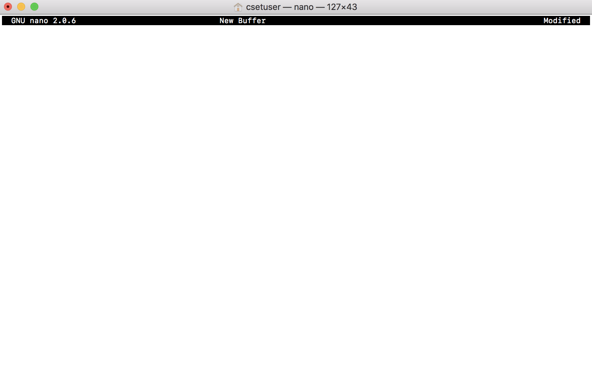

Though my journey as a Developer is only just begining, the fruits of my effort are already starting to show!
Proverbs 12:1 Whoever loves discipline loves knowledge, but whoever hates correction is stupid.
Proverbs 12:11 Those who work their land will have abundant food, but those who chase fantasies have no sense.
Proverbs 12:24 Diligent hands will rule, but laziness ends in forced labor.
The terminal was initially intimidating due to the lack of GUI. However, with a little bit of time and elbow grease, I am able to use and navigate the terminal at a much more optimal rate than I normally would by using point and click. With that said, below I have listed a few of my strengths regarding the terminal:
I am able to use the terminal to fully operate and navigate the popular version control system “Git”. This knowledge includes but is not necessarily limited to:
<p> The Hypertext Markup Language was my first experience dipping my toes into the world of development. The idea that such a basic premise of operation could hold so many interesting and complex concepts caught my attention early. This provided an essential outlet for gaining confidence and developing learning techniques early on in my journey. Though I would consider my knowledge of HTML “Junior Level”, there are still some specific areas where I’m confident: </p>
<ul>
</ul>
The transformative nature of CSS in itself taught me a lot about website structure. This in turn helped me gain a real grasp on just how websites are created. I would describe my experience in CSS as “Junior Level”. Below are a few of my strengths: